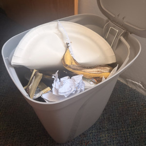

About the Project
As discussed in this article from the University of Chicago, archaeologists often study trash to learn about past societies because discarded objects reveal what people actually did, not just what they claimed to do. Thinking about my own waste in this way made the idea of cataloging it feel like a personal version of this type archaeology.
Another motivation for recording my trash was to better understand how my individual consumption connects to environmental issues. Waste can sometimes feel like an abstract global problem that we blame on megacorporations or the government, but a large portion of it is also created through everyday items like expired produce. By documenting my garbage each week, I hoped to see how much waste I personally generate and what kinds of materials appear most often. According to Earth Day's overview of waste and pollution, the trash people throw away contributes to landfill expansion, greenhouse gas emissions, and damage to ecosystems when plastics and chemicals enter the environment Tracking my trash helped make those environmental consequences more tangible for me.

My dorm room trash can
Finally, I was also inspired by artists who use waste as a way to reflect on consumer culture. Brazilian artist Vik Muniz created portraits using materials collected from a massive landfill, turning garbage into powerful visual statements about consumption and inequality. Seeing trash treated as something meaningful rather than disposable made me realize that what we throw away can tell important stories. By sharing my weekly trash, I hoped to make something usually hidden more visible and encourage reflection on the everyday habits that produce waste.
About the Author: That Piece of Gum Stuck to the Bottom of Your Shoe
This piece of gum currently resides on the underside of your shoe. It was originally produced as a standard ambiguously-pink-flavored chewing gum and briefly served its intended purpose before being thoughtlessly spit out on a sidewalk. Soon after, it adhered to your passing shoe, where it has remained, to your dismay.
Since then, the gum has visited a variety of locations including sidewalks, classrooms, public transportation, and tiled floors. Its daily routine largely consists of maintaining its grip while enduring constant pressure and collecting small environmental materials such as dust, sand, and gravel.
Despite its flattened condition, the gum continues to perform reliably in its role as an unintended passenger to your daily life. Its many experiences provide a down-to-earth perspective on everyday travel, human movement, and waste practices. It remains firmly attached and shows no immediate plans of relocation.